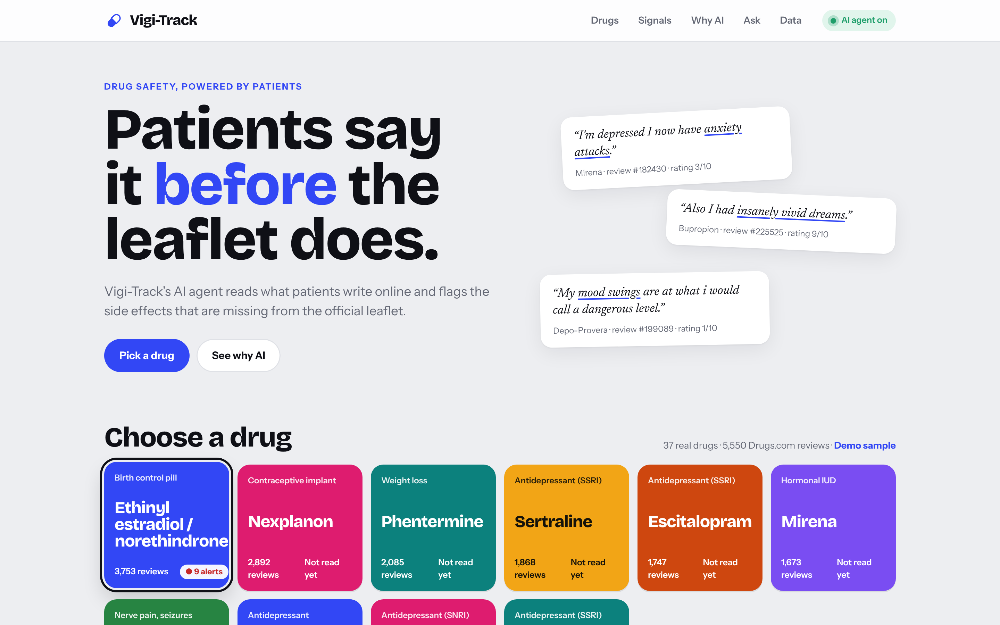
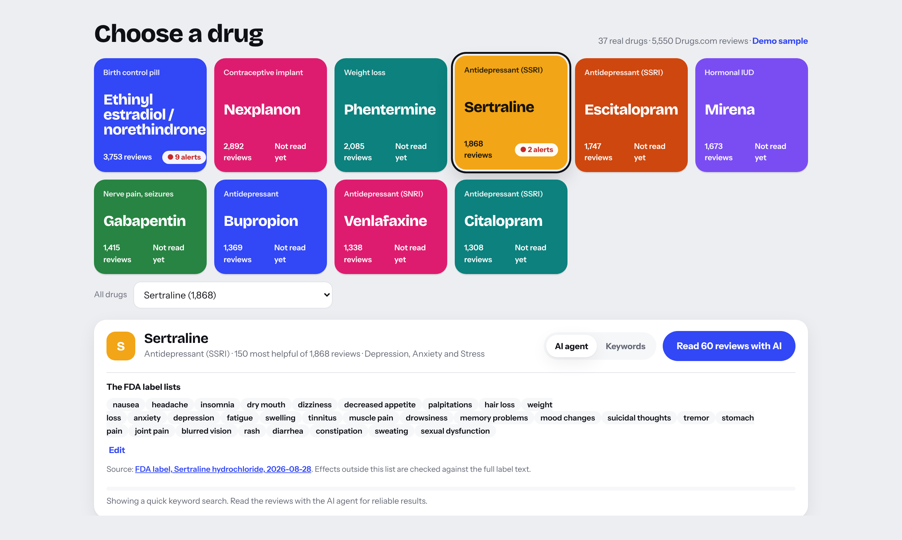
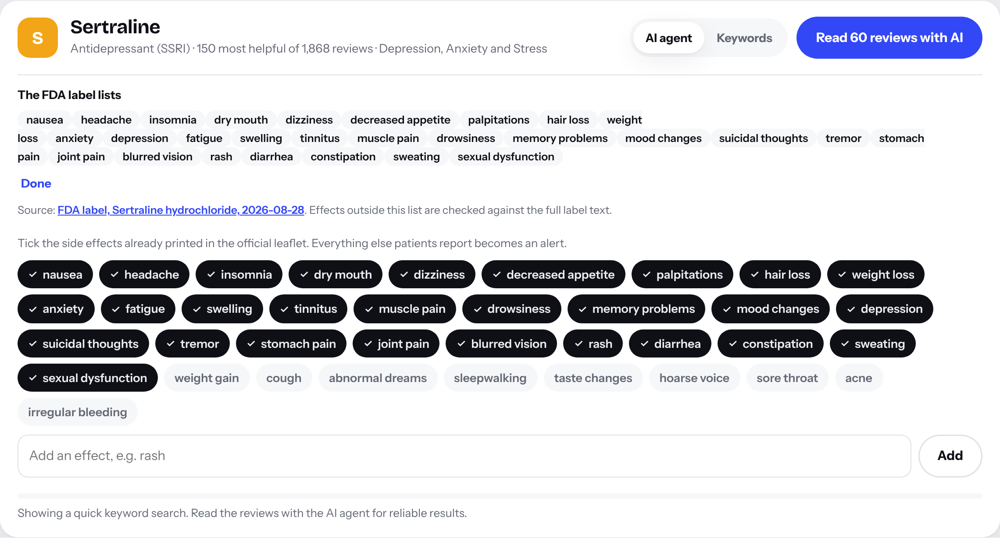
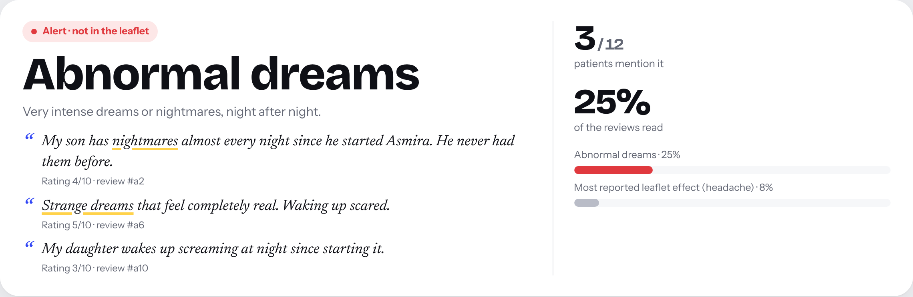
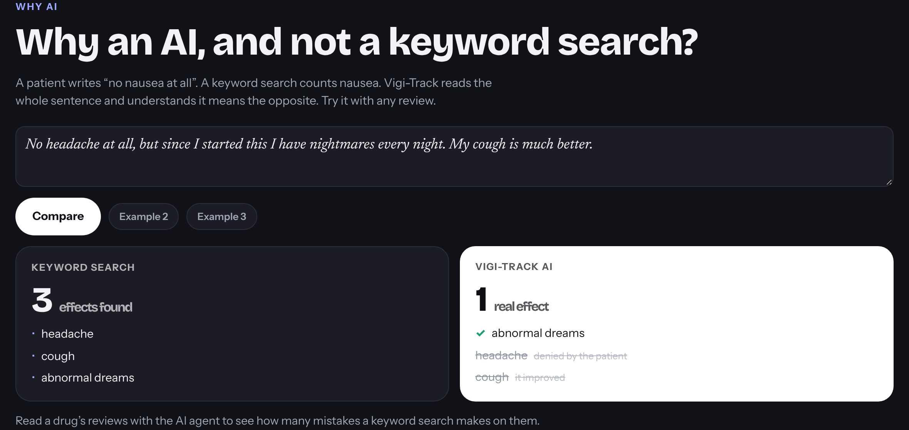
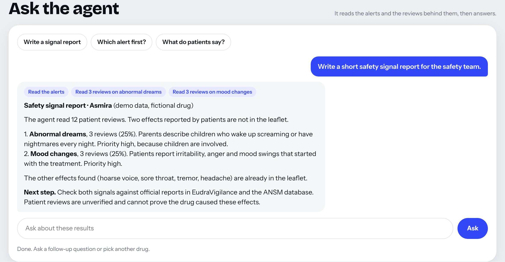
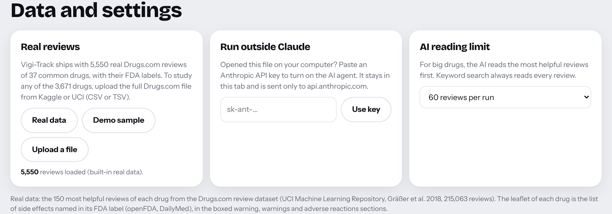

Patients say it before the leaflet does.

AI for Business · Final project · ESSEC · Demo data uses fictional drugs · Not medical adviceVigi-Track reads what patients write about a drug online. An AI agent lists the side effects each patient really had. The app compares them with the official leaflet. Side effects that patients report but that are not in the leaflet become alerts.
The app ships with 5,550 real Drugs.com reviews of 37 common drugs, each with the side effects named in its FDA label. A demo sample of 5 fictional drugs is one click away.
An alert is an early clue that a side effect may be unknown. It is not a proof. Drug safety experts check it against official data before they act.
| How you open it | What works | What you need |
|---|---|---|
| In Claude, the published app | Everything. The AI agent runs on your Claude account. | A Claude account. The first time, Claude asks you to allow the app to use Claude. |
On your computer, app/index.html | Keyword search at once. The AI agent after you add an API key. | A recent browser, an internet connection, and an Anthropic API key. |
The badge at the top right shows the mode. AI agent on means the AI works. Keyword mode means only the keyword search works for now. The menu at the top jumps to each part of the page.
Click a coloured tile. Each tile shows the type of drug, the number of reviews and, once read, the number of alerts. The app opens on the real data. The 10 drugs with the most reviews are tiles, and the All drugs list holds the 37. For each drug, the app keeps its 150 most helpful reviews.
When you click a tile, Vigi-Track runs a quick keyword search right away so you see something. For reliable results, read the reviews with the AI agent (step 3).

The line The FDA label lists shows the side effects already named in the drug’s official FDA label, with a link to that label. Click Edit to tick or untick effects, or to add one. Click Done to close. Your edits are kept for each drug.
An effect outside the app’s vocabulary is also checked against the full label text before it becomes an alert. With the demo sample, the leaflets are filled in for you. With an uploaded file, tick the effects yourself from the drug’s official leaflet.

Choose AI agent, then click Read … reviews with AI. The bar shows progress. Click Stop to cancel. Keywords is a fast word search, kept as a comparison.
The sentence at the top sums up the result. Then each alert gets its own card.
Below the alerts, Already in the leaflet lists the known effects patients mention. The example below comes from the demo sample, read by the AI agent.

In the dark section, type or paste any review, then click Compare. Keyword search lists every word it finds. Vigi-Track AI keeps only the real side effects, and crosses out the others with the reason, for example “denied by the patient”. Example 2 and Example 3 load ready-made tests.
The last line counts how many false alarms and missed effects keyword search made on the drug you just read.

After an AI reading, click a suggested question or type your own, then click Ask. The example below uses the demo sample. The small blue tags show what the agent did, for example “Read 3 reviews on mood changes”. It only uses the data loaded in the app.

?demo to the address). To study any of the other 3,600 drugs, click Upload a file and pick drugsComTrain_raw.csv (or the .tsv) from Kaggle or UCI.api.anthropic.com.
| What you see | What to do |
|---|---|
| AI agent is greyed out. | Open the app in Claude, or add an API key in Data and settings. |
| “Claude was not allowed for this page.” | You declined the request to use Claude. Reload and allow it, or use Keywords. |
| “Too many requests right now.” | Wait a minute and try again. Lower the AI reading limit. |
| “No reviews found” after an upload. | The file needs the columns drugName and review. Use the original Drugs.com file. |
| Ask is disabled. | Read the reviews with the AI agent first. The agent does not work on keyword results. |
| An alert looks wrong. | Read its quotes. The AI can make mistakes, and every alert shows the real words behind it. |
The real reviews come from the public Drugs.com review dataset (UCI Machine Learning Repository, Gräßer et al. 2018, 215,063 reviews). The leaflets come from the FDA labels (openFDA, DailyMed). data/build_real_data.py rebuilds this data into app/real_data.js and data/real_leaflets.csv. data/demo_reviews.csv holds the 66 demo reviews, written for this project, about 5 invented drugs.